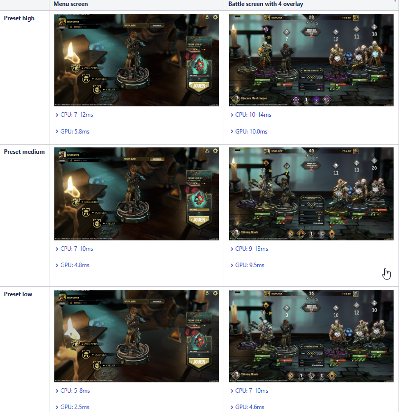
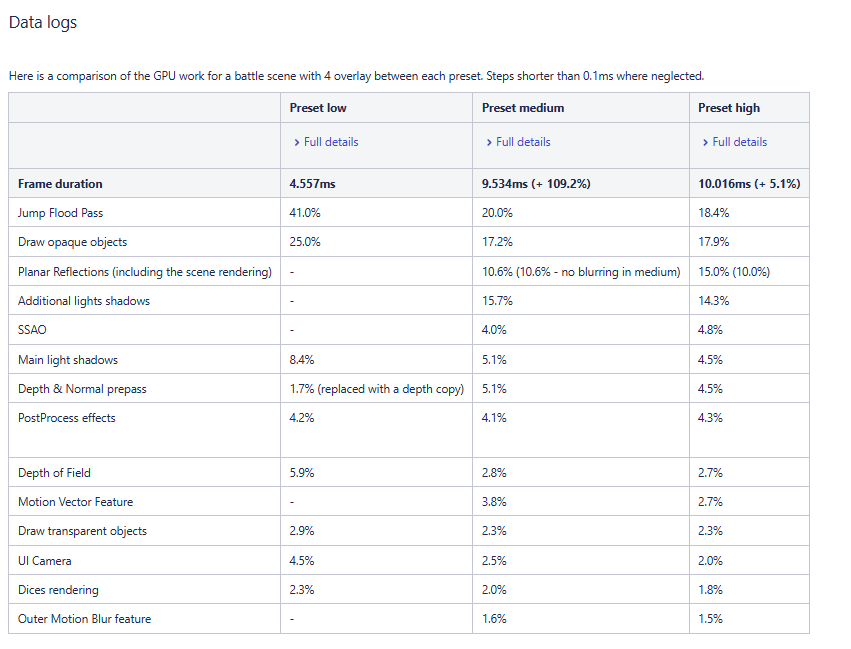
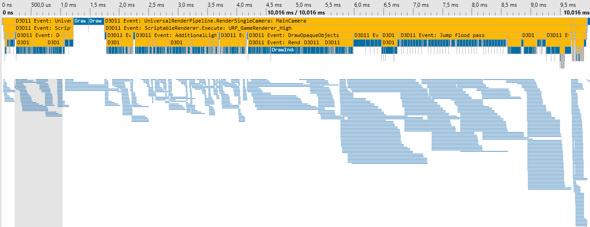
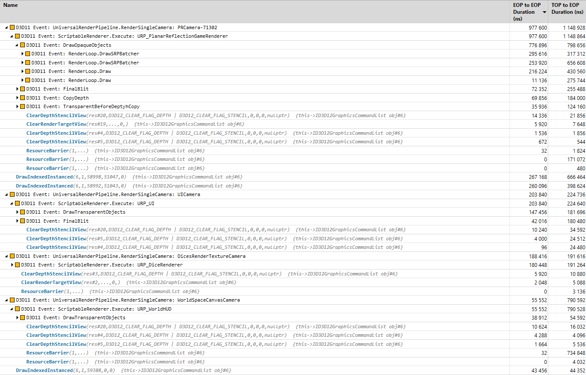
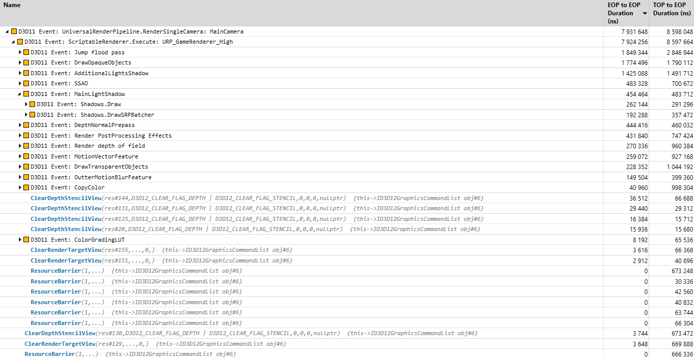
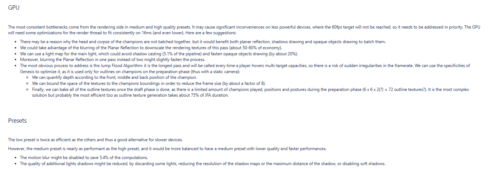

Rapport de profiling GPU – Pix (1 h)
Avant de passer à la suite, posez-vous la question suivante : Que devrait contenir un rapport de profiling selon vous ?
Un rapport de profiling est un document permettant de mieux comprendre le fonctionnement d’un jeu. Il peut contenir différents éléments d’analyse :
- Profiling CPU
- Profiling GPU
- Analyse des draw calls et du bus CPU/GGPU
- Impact RAM
- Impact VRAM ou RAM/VRAM (très important sur iOS -> mémoir unifié)
- Analyse des spikes et freezes
- Consommation d’énergie et évolution de la batterie (important sur mobile)
- Chauffe du device (important sur mobile)
Définir le cadre du rapport
Avant de produire un rapport de profiling, il est essentiel de définir :
- Le device utilisé pour le test (low-end ou device équipé des meilleurs outils)
- Les scènes à analyser (home screen, core gameplay, cas spécifiques)
- Les conditions du test (premier lancement, device chaud, build release ou dev)
- Les paramètres graphiques utilisés (settings low / medium / high)
Il est important d’expliquer clairement le contexte et d’ajouter des screenshots, car le jeu évolue rapidement. Cela permet de comparer les données à long terme et de conserver un rapport exploitable.
Exemple de rapport de profiling







Ce rapport est simple, mais il m’a permis d’étudier les presets graphiques du jeu sur lequel je travaillais et de mieux les ajuster.
Question
Réalisez maintenant votre propre analyse sur un projet de votre choix (celui fourni ou un autre en dev build si possible).
Essayez de comprendre le fonctionnement du jeu et analysez l’une de ses frames.
Télécharger la capture renderdoc de LoggedOut! (472.9 Mo)
Télécharger la capture pix de LoggedOut! (534.6 Mo)
Télécharger la capture renderdoc de Qwent (147.2 Mo)
Télécharger la capture renderdoc de prince of persia (1.55 Go)
Comprendre le fonctinnement d'une frame est une pratique courante chez les développeurs rendu. Elle permet de rester à jour et de comprendre différentes techniques de rendering.
Consultez par exemple : Graphics Studies Compilation